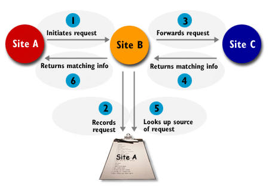

Freenet and
Gnutella
Freenet
and Gnutella represent a new step in distributed information systems. Each
is a system for searching information; each returns information without
telling you where it came from. They are innovative in the areas of
distributed information storage, information retrieval, and network
architecture. But they differ significantly in both goals and
implementation
How Freenet
Works?
The Freenet Network consists of many computers on the Internet each running a piece of software called the "Freenet Server" or "Freenet Daemon". This piece of software allows that computer to become a "node" in the Freenet, a small but equal part of the whole network. This node may store some information itself, and it may know something about some of the other nodes in the Freenet, but no one node knows about the entire system, and no one node is superior to any other. Freenet is, in effect, a perfect anarchy.
How Gnutella Works?
The information in the following link explains how Gnutella works:
What protocol is used?
Gnutella runs over HTTP. Freenet uses its own port and protocol, rather than running over HTTP as Gnutella does.
How Freenet Stores information?
Each node in the network
holds 3 types of information: Key, reference, and optionally
Data
Key: Every material
posted in a Freenet has a unique identifier called its “key”. Nodes
store a number of keys.
Reference:
references to addresses of other Freenet nodes which are also likely to
know about those keys
Data:
the data corresponding to those keys
This
information is stored in a stack within the node like this:
|
|
Key |
Data |
Reference |
|
|
|
"asc" |
"bdf" |
193.123.23.7:8223 |
<- New items added
at top of stack |
|
|
"bdf" |
"mdf" |
132.156.75.93:1933 |
|
|
|
"mdp" |
"rnvfv" |
177.32.23.15:1983 |
|
|
----> |
"mmm" |
|
65.34.234.54:234 |
<- Data stripped
from item when it passes below threshold |
|
|
"pp" |
|
45.52.55.6:3245 |
<- Old items
removed when pushed off bottom of stack |
You will notice that below the threshold ("---->") no data is stored for any of the keys. In fact, if a key is pushed below the threshold its data will be deleted
How Freenet routes Requests:
When the node receives a request for the data corresponding to the
key "mdp". Fortunately the node has the relevant data and so it
sends a response back to the node that sent the request with the data and
also with its own address as the "reference" of the data.
But let's now imagine that the node receives a request for
"pp". The node doesn't have the data itself but it does have a
reference, and so the node forwards the request on to 45.52.55.6:3245. If
the information is found by this node it will be sent back to our node.
Our node should forward it on to whichever node it received the request
from. It also removes the item corresponding to "pp" from the
stack, and pushes the full "key/data/reference" item back onto
the top (our node now knows the data as it has just received it in the
response).
If the
node receives a request for a key that it doesn't have - say "bdp",
then, well rather than give up, our node gives it its best guess. It
notices that "bdf" is the closest key that it has in its
datastore to "bdp" (this is assuming that keys are compared
alphabetically) and so it forwards the request on to the reference node
corresponding to "bdf". If this data is successfully found then
it is pushed on to the top of the stack (the "bdf" key is *not*
deleted or moved to the top). If the node receives a message indicating
failure then rather than just giving up, it will forward the request to
its next best guess (which would be "asc" if comparing the keys
alphabetically). This process would continue until the node had exhausted
all of its keys (each time choosing the next closest key). If a node ever
receives a request that it has previously forwarded on, it will respond
with a "seen before" failure message (this prevents infinite
loops). Time-to-live values are also built into messages to prevent
hopeless searches going on for too long.
How Gnutella Network is formed?
Since
there are no central servers in the Gnutella network, in order to join the
system a user initially connects to one of several known hosts that are
almost always available (although these generally do not provide shared
files). One such host is www.gnutellahosts.com. You connect to this one
person on the network, by entering its IP or host name in the IP text box
and that connects you directly to that one person on the network. This
node then sends your requests to other nodes it knows and thus you get to
know many nodes in the network.
How Gnutella routes information?
Once
attached to the network, peers interact with each other by means of
messages. When you search for some information, your system sends a
unicast request to each of the hosts it knows and your request is
recursively sent throughout the network. The messages allowed in the network are:
Ping Messages -
Essentially, an "are you there?" message directed at a host.
Pong Messages - A
reply to a ping ("yes, I'm here"). The pong message contains
information about the peer such as their IP address and port as well as
the number of files shared and the total size of those files. Peers
forward this kind of message to their neighbors so that it is possible to
later find other peers. This is needed in case there is a disconnect in
the network.
Query Messages -
These are messages stating, "I am looking for x" and can get
forwarded throughout the entire network (at least theoretically). Query
messages are uniquely identified, but their source is unknown.
Query Response Messages
- These are replies to query messages, and they include the information
necessary to download the file (IP, port, and other location information).
Responses also contain a unique client ID associated with the replying
peer. These messages are propagated backwards along the path that the
query message originally took. Since these messages are not broadcast it
becomes impossible to trace all query responses in the system.
Get/Push Messages - Get messages are simply a request for a file returned by a query. The requesting peer connects to the serving peer directly and requests the file. Certain hosts, usually located behind a firewall, are unable to directly respond to requests for files. For this reason the Gnutella protocol includes push messages. Push messages request the serving client to initiate the connection to the requesting peer and upload the file. However, if both peers are located behind a firewall a connection between the two will be impossible.
Fig. How Gnutella retrieves information

What determines where gnutella and freenet store info?
Freenet:
When a new data item is inserted into the network, each node forwards it to where it thinks it should be (ie. they will forward it to the reference corresponding to the closest key to the key/data pair being inserted). This is subject to a time-to-live which will decide where the new data will actually rest (this time-to-live will probably be 4 or 5 but experimentation will be required to determine an optimum value).
Over time, nodes should come to specialize in locating sets of similar keys. Because, if a node is listed in routing tables under a particular key, it will tend to receive mostly requests for keys similar to that key. It is therefore likely to gain more ``experience'' in answering those queries and become better informed in its routing tables about which other nodes carry those keys. Second, nodes should become similarly specialized in storing clusters of files having similar keys. Because forwarding a request successfully will result in the node itself gaining a copy of the requested file, and most requests will be for similar keys, the node will mostly acquire files with similar keys. Taken together, these two effects should improve the efficiency of future requests in a self-reinforcing cycle, as nodes build up routing tables and datastores focusing on particular sets of keys, which will be precisely those keys that they are asked about.
Gnutella:
Each node in the Gnutella Network can share a number of files with the other nodes in the network. Over time, the popular files get replicated in many other nodes in the network
Differences
between Gnutella and Freenet:
1. Data Retrieval:
Gnutella: Suppose node A asks node B for data matching "MP3." After passing back anything that might be of interest, node B passes the request on to its colleague at node C and also node B keeps a record that node A has made the request. If node C has something matching the request, it gives the information to node B, which remembers that it is meant for node A and passes it through to that node.
2.
Every material posted in a Freenet has a unique identifier called
its “key”. So the success of a request depends on how close the
request key is to the actual key available in Freenet node. If a request key matches the key for which data is available
in the Freenet node, then the node returns the data to the requesting
node. Note that a Gnutella
node returns “some data relevant to the search key”, to the requesting
node, much like a search engine. There are no unique identifiers for each
material in a Gnutella Network.
In Gnutella, the returned data could be an entire file of music or other requested material, but Gnutella is not limited to shipping around files. The return could just as well be a URL, or anything else that could be of value. Thus, people are likely to use Gnutella for sophisticated searches, ending up with a URL just as they would with a traditional search engine. But in Freenet, the returned data is a material matching the request key.
5.
The main difference between the two systems is that when a Freenet
client satisfies a request, it passes the entire data to the requester.
This is an option in Gnutella but is not required. Even more important, as
the data passes back along a chain of Freenet clients to the original
requester, each client keeps a copy (unless it is a huge amount of data
and the client decides that keeping it is not worth the disk space). The
client keeps the data so long as other people keep asking for it, but
discards the data after some period of time when no one seems to want it.
References: 1. Gnutella and Freenet Represent True Technological Innovation,
http://www.oreillynet.com/pub/a/network/2000/05/12/magazine/gnutella.html
2.
Freenet: A Distributed Anonymous
Information Storage and Retrieval System
http://freenet.sourceforge.net/index.php?page=theoppr
3. The Freenet Project: How Freenet works
http://freenet.sourceforge.net/index.php?page=how-freenet-works
4. Gnutella Tutorial
TOP